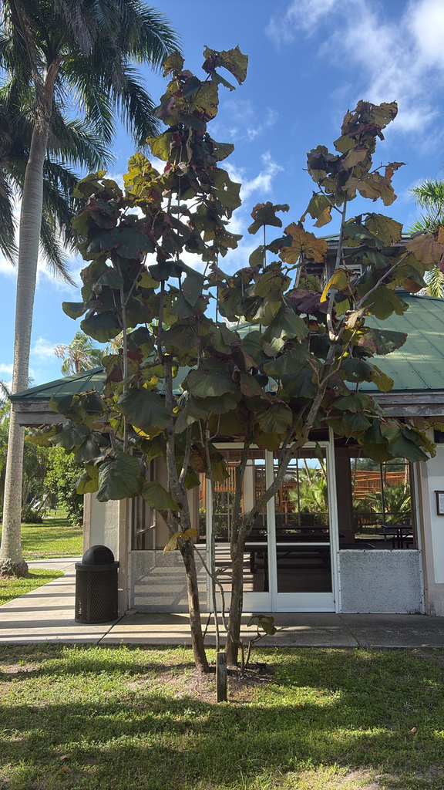

Non-native. Native to coastal regions of the Caribbean — Antigua, Barbados, Barbuda, Dominica, Hispaniola, Martinique, Montserrat, and Puerto Rico. Not native to Florida. Member of Polygonaceae — the buckwheat family, which also includes knotweed and garden sorrel.
The fruit — small, grape-like clusters — is eaten by birds. Related Coccoloba species are documented nectar sources for bees and butterflies, and the dense evergreen canopy provides shade and perching structure.
As a Caribbean coastal species, it is adapted to the same conditions as Florida's native Seagrape and supports similar invertebrate and bird communities.
The massive fallen leaves decompose slowly and contribute to ground-layer habitat, though they also require regular cleanup — which is part of daily park operations near this specimen.
Reproduction and Identification
Flowers — Greenish-white, small, produced on erect spikes up to 60 cm long. Not ornamentally significant. The tree is dioecious — male and female flowers on separate plants; only female trees produce fruit.
Fruit — Small, approximately 2 cm in diameter, in grape-like clusters. Edible on related species; similarly edible here though not widely consumed. Eaten by birds.
Leaves — The defining feature. Orbicular (round), extremely variable in size from small to up to 90 cm (3 feet) in diameter. Bright green above, paler below with yellow to reddish veins. Smooth wavy margin. Stiff and heavy — a large fallen leaf has real weight to it. Juvenile plants produce larger leaves than mature ones.
Trunk — Upright, can grow to 2 feet or more in diameter. Open, sparsely branched crown.
The leaves are unmistakable — no other tree in the park or in most Florida gardens produces a round leaf anywhere near this size. Look for the yellow-red vein pattern on the underside. Fallen leaves on the ground around the tree are often as interesting as those still attached.
Fruit is edible on related species and similarly edible here, though not a cultivated food plant in Florida landscapes. Not a casual trail snack.